A classical Structure-from-Motion pipeline built from scratch in Python — no deep learning, no scanner. Every point below was measured by multi-view geometry from ordinary photographs. Click any result to rotate it in your browser.
All images registered. These are the results the accuracy claims rest on.
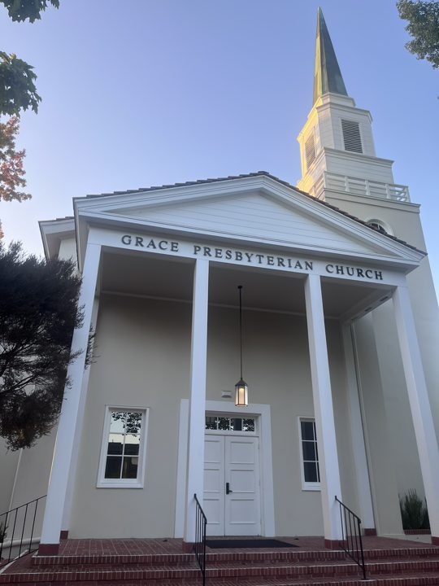
Every camera placed on a self-captured building.
Open 3D viewer →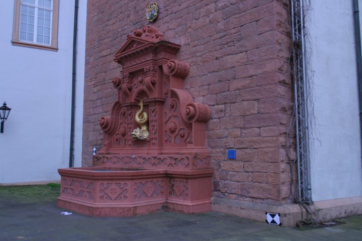
Surveyed calibration and surveyed poses. 0.035° mean orientation error against the survey.
Open 3D viewer →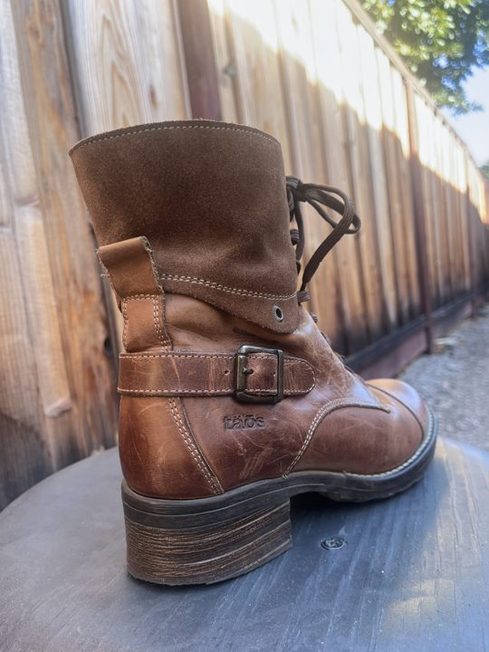
Best self-captured result. Agrees with COLMAP to 1.31° with no calibration beyond EXIF.
Open 3D viewer →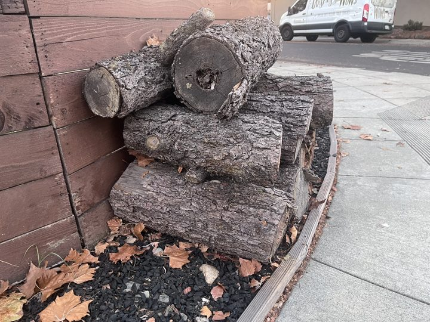
Bark gives dense texture — the best-behaved phone capture, and the one dataset shipped in the repository.
Open 3D viewer →Some views could not be placed, so accuracy is reported only over those that were. Where COLMAP registers every view on the same photographs, the limit is this pipeline’s rather than the capture’s.
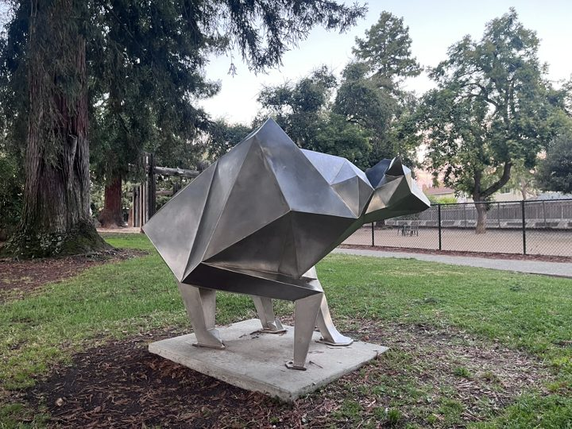
Nearly every camera placed, but only 3.9% of points land on the statue — the park around it supplies the features.
Open 3D viewer →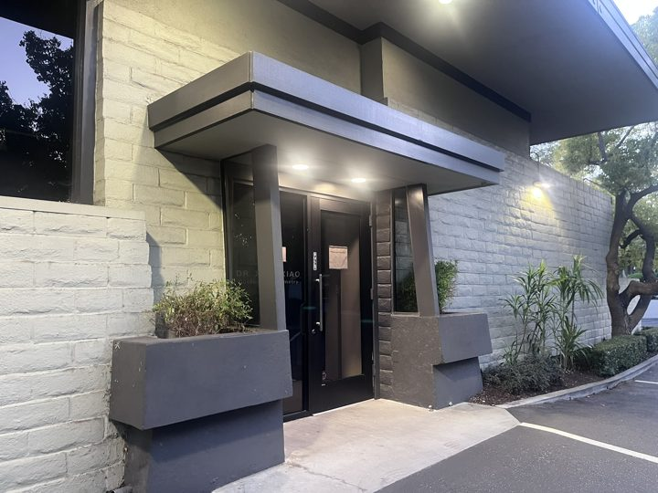
Indoor scene, most views placed.
Open 3D viewer →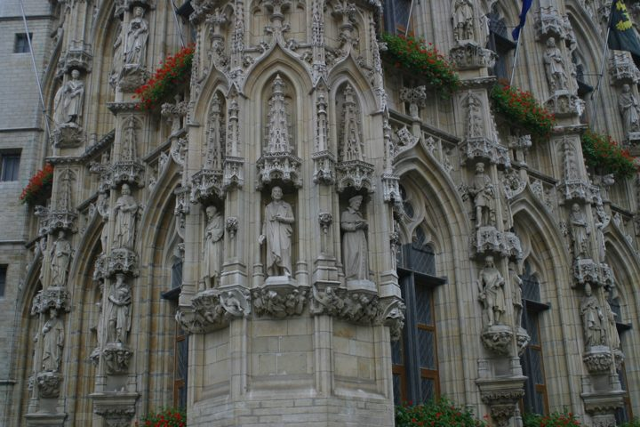
The one set with measured 3D points as well as poses. More accurate than COLMAP here.
Open 3D viewer →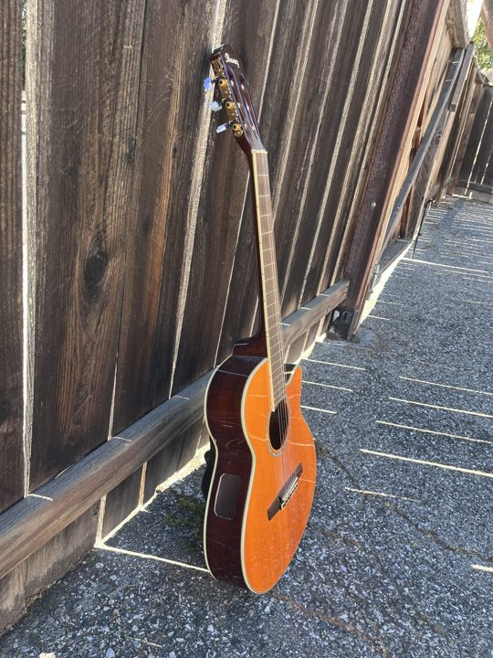
The varnished body is too smooth to match on, so the fence and gravel supply the features — only 3.7% of points land on the instrument. COLMAP registers all 16.
Open 3D viewer →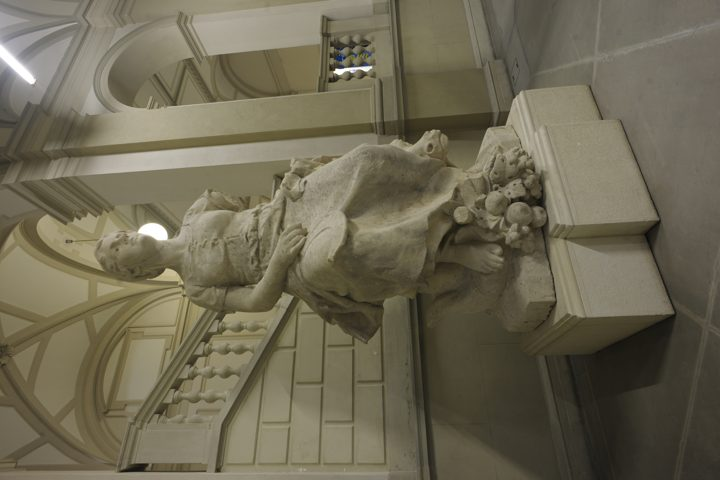
Wide field of view and a 14.6° median step between views, above this pipeline’s envelope. COLMAP registers all 11.
Open 3D viewer →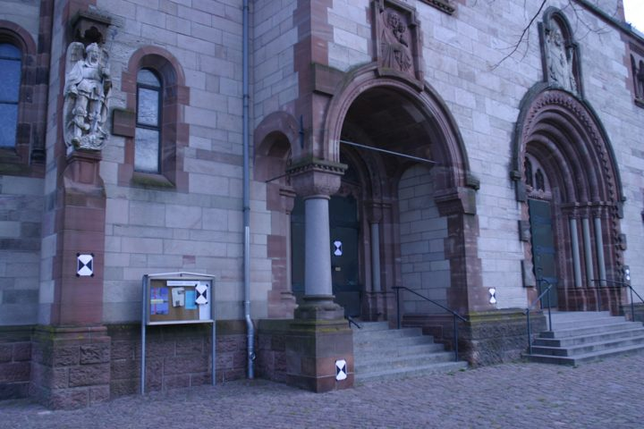
Benchmark façade. COLMAP registers all 23, so the ten missing views are this pipeline’s limit, not the capture’s.
Open 3D viewer →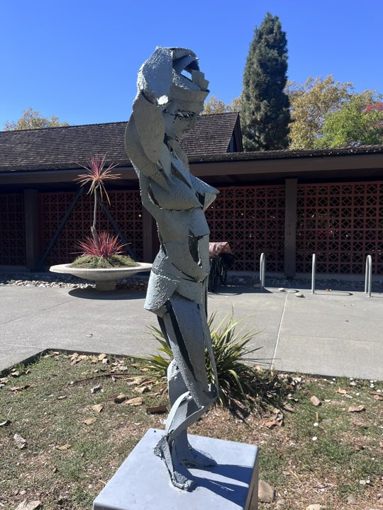
Smooth surfaces and a great deal of background. COLMAP registers all 16, so the capture was adequate and this is a limit of the implementation.
Open 3D viewer →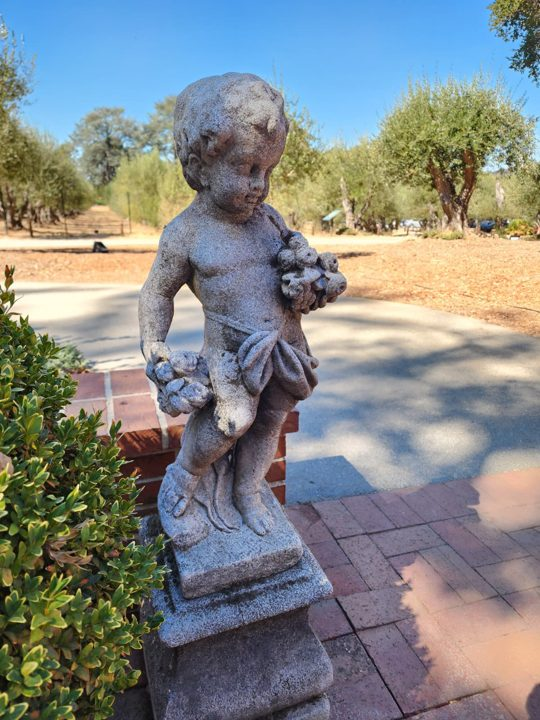
Smooth stone with little to match on, and a 13.6° step between views. COLMAP manages 9 of 13, so both systems struggle here.
Open 3D viewer →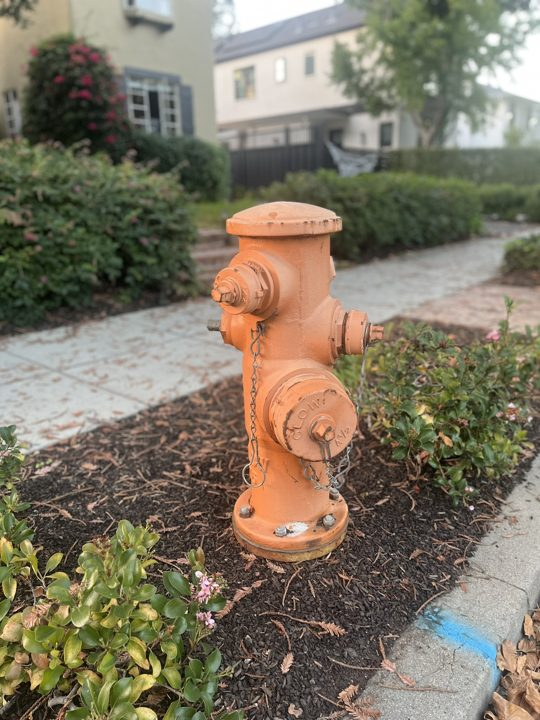
Smooth painted metal gives feature matching almost nothing to hold. COLMAP registers all 16 — the photographs were workable; this pipeline was not.
Open 3D viewer →For these two the problem is mostly in how the photographs were taken rather than in the pipeline. The test is whether COLMAP fails on the same images: where it does, the capture was inadequate; where it does not, this pipeline was.
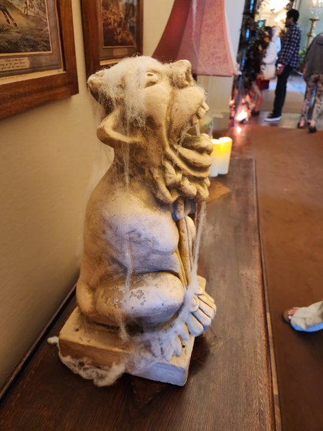
The statue is only partly in frame in several shots, and the median step between views is 16.9°. This pipeline places 2 of 9 and recovers 20 points; COLMAP places all nine but recovers only 1,212, and neither produces a recognisable statue. Marginal capture for both; the registration gap is this pipeline’s.
Open 3D viewer →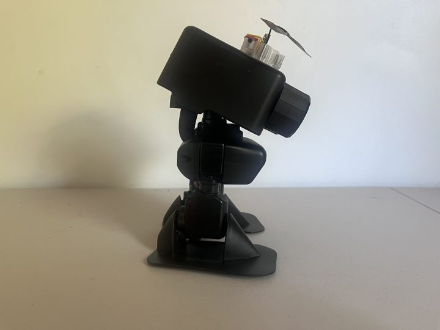
The robot was rotated while the camera stayed still. Structure from motion assumes a rigid scene and a moving camera — here the background says the camera never moved while the robot says it orbited, and no single solution satisfies both. COLMAP places the same 2 of 39: the photographs, not the code, are the limit.
Open 3D viewer →Each viewer shows the sparse point cloud the pipeline measured, the recovered camera positions around it, and — where the dense stage ran — a Poisson mesh. Cameras is how many photographs were successfully placed; reprojection is how far the 3D points land from where they were actually observed. Every result but one also carries a dense Poisson mesh. A low reprojection error on a failed reconstruction means the solver converged on a wrong answer, which is why both numbers appear together.
The pipeline, the evaluation code and the full report are in the repository. See also the module architecture.